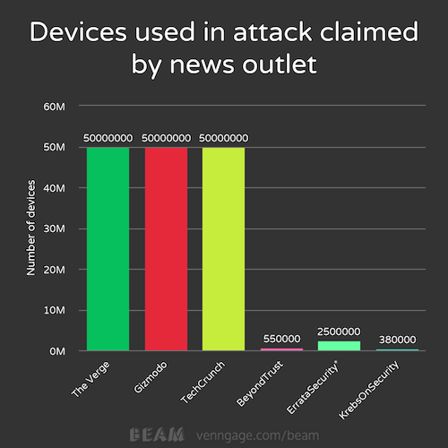
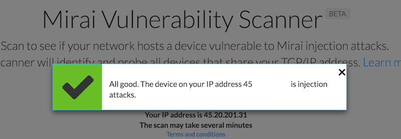

In preparation for my upcoming conference talk “The Internet of Things and iOS: Don’t let your toaster bring down the internet!” I have been doing a lot of research on the Mirai botnet.
The Mirai (Japanese for “The Future”) botnet was used in a DDoS attack against the DNS service provider Dyn on October 21st, 2016.
In this attack, some IoT devices were used to block their servers, bringing down popular sites such as
- Github
- Spotify
- Yelp
- and others …
for most of the US east coast (affected area dependent on routing and Dyn’s distribution).
When doing my research though, I was blown away by two things, one of which I want to talk about in this post:
- The sheer simplicity of the attack-vector Mirai used to attack and gain its victims
- The shitty reporting some major tech (news) outlets put out on the web
You can guess about which part we are talking first! That’s right; we’re talking about the sh**** reporting first. But before we go on, under normal circumstances I would avoid using words like shit, but bear with me; you want to use that word as well eventually.
For my research, I used Google and DuckDuckGo to find reporting and info on my topic. To start off, I was searching for:
- “Internet Outage October 21, 2016.”
- “Mirai Attack October 2016.”
- “Mirai Botnet.”
The first query got me a lot of non-technical news that were covering the events of October 21st, 2016 regarding the DDoS attack we’re talking about. Some of the top results were CNN, USAToday, and Wikipedia.
While I expect those sites to be at least half decent (except Wikipedia), I don’t expect them to be too much to detail … and so I skipped that query.
The second query though had to deliver better results. I was giving the child a name - Mirai - and I was not disappointed. Sites like Wired, Gizmodo and Techcrunch came up and so did another source KrebsOnSecurity.
As expected, the third query returned almost the same results as the second.
There I was, reading through a dozen articles reporting on the subject. I skipped the one’s I knew would tell me the apocalypse is coming and it’s coming from Russia (with love), like Huffington Post but I kept reading everything else.
While Wired and Gizmodo did nothing else than awfully citing Dyn’s Tweets and putting up an updated ticker, “The Verge” concentrated on copying Wired’s stupid GIF that I won’t spare you:
 Source: Gizmodo
Source: Gizmodo
(If you wonder why I think it’s senseless, that’s because there’s no movement, why would you post a low-quality GIF then? Second, on that scale, it could be whatever state)
In fact, all the sites mentioned (except KrebsOnSecurity) shared almost the same story using almost the sa words:
- It was a DDoS attack
- DNS works like a phonebook (…)
- IoT Security is flawed
But interestingly I also found this:

Yes, that’s 50 Million devices claimed by The Verge, Gizmodo and TechCrunch and approx. 1% of that claimed by BeyondTrust and less than that by KrebsOnSecurity.
Now let’s go back for a second, Gizmodo and TheVerge collaborate and cite each others mentioning “Tens of Millions of IP Addresses” attacked Dyn that day. I chose 50 Million as a middle ground for that vague statement, forgive me.
TechCrunch chose the same citing from Dyn without fact checking it, which is just as bad.
BeyondTrust posted on October 24th that Mirai has 550 000 active nodes “according to Dale Drew, the CISO of Level 3 Communication”.
And KrebsOnSecurity suggests that Mirai has between 300 000 and 380 000 active nodes. Taking numbers from a HackerForums post from the person that posted Mirai’s source code after the attack.
ErrataSecurity does its calculations with about 2.5M, but as they mention their numbers are not backed, so I would exclude them from this comparison of ridiculousness.
Hmm, so I’ve asked myself whom I would trust in this discussion?
The news outlets that blindly quote Dyn who has to protect itself at their weakest point or some hacker that posted the actual source code used in said attack? Or do I even believe the Level 3 person that might have had some insight into the traffic generated over time?!
Personally, I don’t know and it is extremely hard to say what the actual numbers are if no one took responsibility and gave a number, but blindly citing people and claiming numbers without putting any doubt at it seems to lead to more confusion than anything else.
So what would I expect to happen?
- Well, I would wish that when you post a story about a major incident, you post more facts than spreading rumors.
- “Tens of Millions” seems unlikely in the face of the facts that surfaced the same day about Mirai. So why not mention that?
- If you don’t understand the technology, just link to another site that’s reputable instead of wrongfully explaining something.
That’s it from me on the news coverage about the Mirai Botnet used in the Dyn attacks last October.
Before I stop writing, I want to mention one other site reporting on the issue:
Incapsula
It’s funny to see how they claim to have uncovered that the Mirai Botnet consisted of 49 657 devices and even gave a distribution by country chart. Although even better is their “Mirai Scanner” tool that tells you if you’re infected with Mirai.
I have no words for how they display if you are infected: 
I guess, that is what happens when you force your employees to write blog posts … at lest they put the “BETA” tag there.